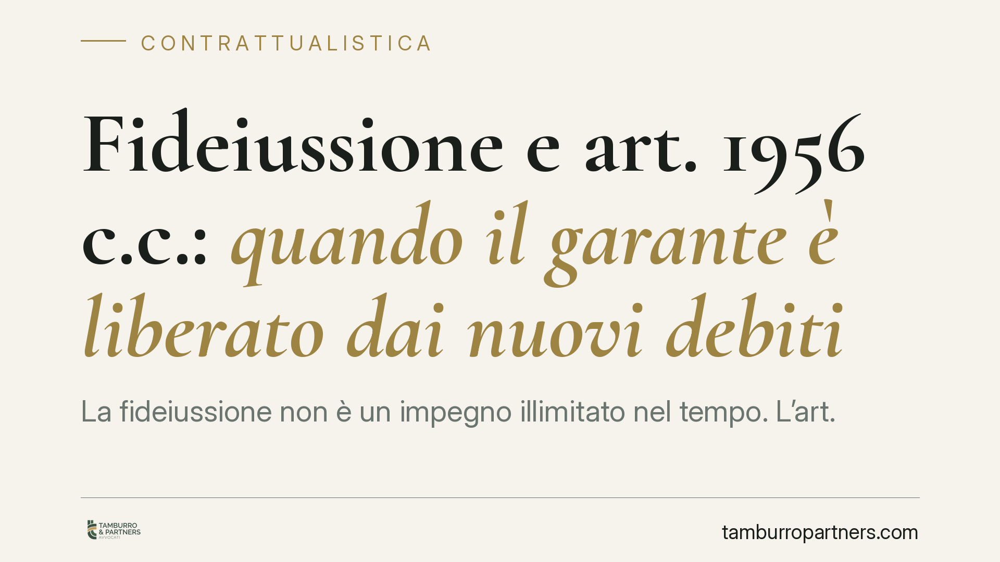

Fideiussione e art. 1956 c.c.: quando il garante è liberato dai nuovi debiti
La fideiussione non è un impegno illimitato nel tempo. L'art. 1956 del Codice civile libera il garante quando il creditore, senza autorizzazione, concede nuovo credito a un debitore la cui crisi è ormai nota. La Cassazione ha rafforzato questa tutela: prova a carico del creditore e nullità delle rinunce preventive. Vediamo perché conta per chi firma una garanzia.

Il problema: garanzie firmate una volta, debiti che crescono negli anni
Chi presta una fideiussione garantisce con il proprio patrimonio i debiti di un altro soggetto. Il problema nasce quando la garanzia copre obbligazioni future: il debitore contrae nuovi debiti nel tempo e il garante si ritrova esposto anche per operazioni concesse quando la situazione economica era già compromessa.
La fideiussione (art. 1936 c.c.) è il contratto con cui un terzo si obbliga verso il creditore garantendo l'adempimento di un'obbligazione altrui. Nella fideiussione per obbligazioni future il garante copre debiti non ancora sorti al momento della firma. Ed è qui che il Codice civile pone un limite.
Inquadramento normativo: l'art. 1956 c.c.
L'art. 1956 c.c. stabilisce che il fideiussore per un'obbligazione futura è liberato se il creditore, senza speciale autorizzazione del garante, ha fatto credito al debitore pur conoscendone il peggioramento delle condizioni patrimoniali, tale da rendere notevolmente più difficile il soddisfacimento del credito.
La ratio è chiara: il creditore non può aggravare la posizione del garante concedendo nuova finanza a un debitore che sa essere in difficoltà, senza avvisarlo e ottenerne il consenso. Il garante ha accettato un rischio calcolato al momento della firma, non un rischio in continua espansione a sua insaputa.
La Cassazione ha precisato due punti decisivi. Primo: l'onere della prova. Spetta al creditore dimostrare di aver agito correttamente, cioè che il garante era informato o aveva autorizzato il nuovo credito. Non è il garante a dover provare l'inganno. Secondo: le clausole con cui il fideiussore rinuncia preventivamente e in via generale alla tutela dell'art. 1956 c.c. sono nulle, perché svuotano una protezione posta a presidio della buona fede contrattuale.
Implicazioni pratiche: cosa cambia per chi ha firmato una garanzia
Per chi ha prestato fideiussione — spesso un familiare, un socio o un amministratore che garantisce il finanziamento di un'impresa — questo significa che l'esposizione non è automaticamente illimitata.
Se la banca o il creditore ha continuato a erogare credito dopo che i segnali di crisi del debitore erano evidenti, e lo ha fatto senza informare il garante né chiederne l'autorizzazione, quella parte di debito può non essere esigibile nei confronti del fideiussore.
Attenzione però: la liberazione riguarda i nuovi crediti concessi dopo l'aggravamento noto delle condizioni patrimoniali. Non cancella retroattivamente i debiti già maturati e coperti dalla garanzia quando la situazione era ancora regolare.
Sul piano probatorio, la posizione del garante è più solida di quanto si creda: non deve ricostruire lo stato d'animo del creditore, ma il creditore deve giustificare la propria condotta. Nel contenzioso bancario questo elemento pesa.
Le clausole di rinuncia preventiva, molto diffuse nei moduli standard predisposti dagli istituti di credito, non tengono se sono formulate in modo generico e anticipato. Vanno però lette caso per caso: la valutazione dipende dal testo concreto e dalle circostanze.
Cosa fare in concreto
- Recuperate la documentazione: contratto di fideiussione, estratti conto, comunicazioni ricevute e ogni atto che dimostri le date di erogazione del credito garantito.
- Ricostruite la cronologia: individuate il momento in cui la crisi del debitore è diventata conoscibile per il creditore e verificate quali finanziamenti sono stati concessi dopo quella soglia.
- Verificate le clausole del modulo: controllate se il contratto contiene una rinuncia preventiva alla tutela dell'art. 1956 c.c. e come è formulata.
- Non firmate nuove autorizzazioni senza valutarle: una richiesta di consenso a ulteriore credito può reintegrare l'esposizione che la legge avrebbe altrimenti escluso.
- Fatevi assistere prima di pagare o di firmare un piano di rientro: consigliamo di far esaminare la posizione da un legale prima di assumere impegni che potrebbero rinunciare a difese esistenti.
La tutela dell'art. 1956 c.c. esiste, ma opera solo se il garante la fa valere con tempestività e sulla base di elementi concreti. La valutazione è sempre specifica del singolo rapporto.
---
Contributo informativo a cura di Tamburro & Partners - Avv. Giuseppe Tamburro. Non costituisce parere legale.
Ogni contratto ha il suo equilibrio.
Se vuoi una revisione delle clausole o una redazione su misura, scrivi allo studio. Ti rispondiamo entro un giorno lavorativo.